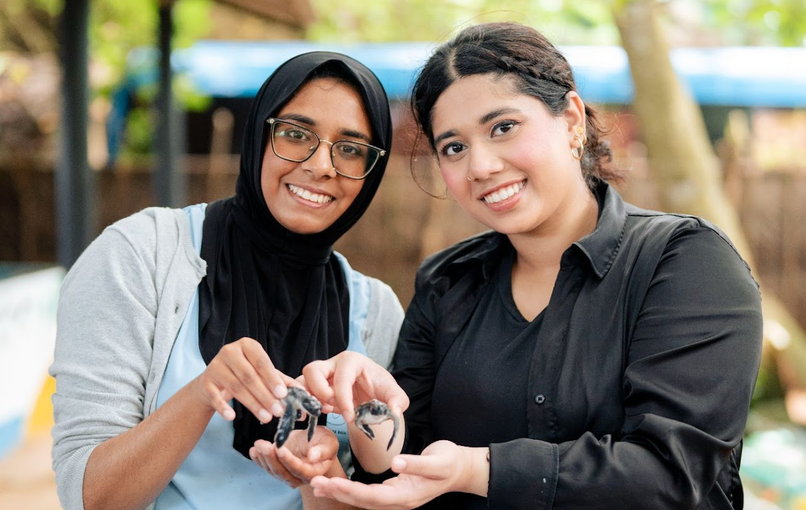
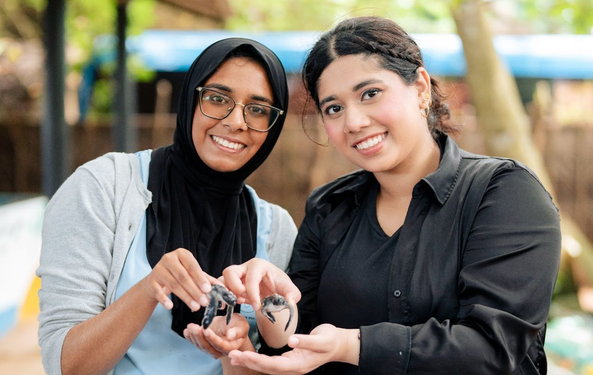

Global Competency
Studying Abroad at NYU Abu Dhabi
During my study abroad experience at NYU Abu Dhabi, I immersed myself in a unique educational environment that offered far more than just academic growth. Engaging with students from over 200 nationalities, I had the opportunity to explore diverse perspectives in education and lifestyles. Participating in various club activities allowed me to connect with peers from different cultural backgrounds, deepening my understanding of how education systems and daily life differ across the globe. This experience was a significant departure from the American education system I had always known, providing me with invaluable insights that expanded my worldview.
I chose to study abroad in Abu Dhabi to fulfill the GLASS requirement, but more importantly, to gain a global perspective that would shape my personal and professional aspirations. The chance to live and learn in such a culturally rich environment was a pivotal step in my journey toward becoming a global leader. This experience taught me how to navigate life independently in a foreign country, from managing daily practicalities to overcoming language barriers. It also allowed me to embrace my cultural identity as a Muslim American more fully, something I hadn't explored as deeply while living in New York.
The impact of this experience was profound, touching every aspect of my development. Academically, I learned to adapt to a new learning environment, which helped me better understand my own learning styles and how to use my time more effectively. Personally, I gained confidence in my ability to communicate and connect with people from different backgrounds, and I grew more comfortable with my cultural identity. This experience directly relates to my mission to become a global leader capable of making a positive impact across diverse cultures. By understanding the importance of peace, justice, and strong institutions—core elements of UN Sustainable Development Goal 16—I am now more committed to promoting these values in my future endeavors.
HUMAN'INSA Program at INSA in Lyon, France
During my time at INSA Lyon, I participated in the three-week HUMAN'INSA program, which offered a unique combination of technical and cultural education. The program was divided into two tracks: one focused on Artificial Intelligence, where I used Python to generate and understand simple AI models, and the other on French Language and Cross-Cultural Communication, which allowed me to immerse myself in French culture. This dual approach enabled me to not only advance my technical skills but also to improve my ability to communicate effectively with people from diverse backgrounds, which is essential in today's globalized world.
I chose to participate in this program because it presented a valuable opportunity to step outside my academic comfort zone. As a Biomolecular Science major, I had only a basic understanding of Python, so the AI track was particularly challenging and rewarding. At the same time, the cross-cultural communication track offered me a chance to deepen my understanding of French culture and language, which is crucial for anyone aspiring to work in international environments. This combination of technical and cultural learning was exactly what I was looking for to broaden my skill set and global perspective.
The impact of this experience was profound both academically and personally. On the academic side, I significantly improved my proficiency in Python, a skill that is increasingly important in the research field, especially as AI becomes more integrated into scientific work. Personally, I overcame several challenges, such as navigating French cuisine with dietary restrictions and overcoming language barriers, which boosted my confidence in adapting to new environments. Additionally, interacting with students from various countries allowed me to gain insights into different educational systems and cultural norms, further expanding my global awareness.
This experience directly ties into my mission to become a global leader capable of making a positive impact across diverse cultural settings. By combining technical knowledge with cross-cultural communication skills, I not only enhanced my ability to work in a multicultural environment but also gained a broader perspective on global education systems. This aligns with my long-term goal of applying these experiences to create more equitable and inclusive educational opportunities in the future, furthering my commitment to making a meaningful difference in the world.
UN SDG's to Social Innovation course- Hanyang University
I completed a 3 week course in Seoul, South Korea which I learned about the UN Sustainable Development Goals and social innovation. The program combined theoretical knowledge with practical applications through case studies, field trips, and a group project in which a sustainable social entrepreneurship model had to be developed to address a citywide social issue of our choosing. The case studies involved issues in South Korea, as well as issues in other countries to bring different perspectives to coming up with sustainable solutions.
This course provided a strong focus on all the SDGs, but I felt that there was an emphasis on SDG 17: Partnerships for the Goals. This course taught me how to delve deeper into the key indicators for the SDGs and what it meant to come up with a truly sustainable solution. One key indicator of SDG 17 is to "enhance policy coherence for sustainable development" which is something this course was able to achieve in an educational context. This course also related to SDG 9: Industry, Innovation and Infrastructure as several lectures focused on how sustainable and reliable infrastructure was developed in South Korea, as well as how other countries in Africa and Asia have taken different creative approaches. This course placed a focus on creative strategic thinking and how to train conscious empathy to inspire new solutions for social issues. Additionally, the course emphasized system thinking and root cause analysis to determine the most effective way in addressing a social issue while coming up with a sustainable solution.
This course was an enlightening and fun experience that allowed me to be culturally immersed in South Korea and learn more about how to develop sustainable solutions with creative approaches. This learning experience will definitely be useful as I begin to write my Bachelor's Thesis this year with a focus on SDG 3: Good Health and Well-Being. I was inspired by Dr. Kim's lectures and case studies try to think outside the box for sustainable solutions, and consider how to achieve a "circular economy" when addressing issues so that the solutions remain sustainable. As someone who would like to go into the healthcare field in the future, the field trip and guest lectures we attended were also inspiring and brought me fresh unique perspectives on how I may want to address social issues in dentistry in the future. Overall, I felt that this course guided my professional, academic, and personal development by allowing me to fully understand the thought process behind finding social issues to address and coming up with a range of solutions that would be sustainable in the long run.


Commitment to Service
GLASS Event Team Member & Alternative Break
In my role as part of the GLASS Event Team, I worked in a team to organize and promote three thematic events throughout the semester, aimed at enhancing the cultural and social experience of international students at Tandon. My responsibilities included brainstorming innovative event concepts, coordinating with vendors, managing budgets, and ensuring the events were inclusive and engaging for all students. I was driven to this role by a desire to build a welcoming and dynamic community among students from various cultural backgrounds, helping them to feel connected and supported during their educational journey.
This experience had a considerable impact on me. On a professional level, it honed my skills in organization, communication, and management, all of which are critical for future leadership positions, especially in the healthcare sector where effective coordination and communication are key. On a personal note, it was incredibly fulfilling to know that I was making a positive difference in students' lives by enriching their social and cultural experiences. Academically, it broadened my perspective on cultural diversity, an aspect that is vital for providing equitable healthcare services.
Organizing these events required a keen understanding of different needs and preferences, similar to how effective healthcare necessitates an understanding of diverse patient backgrounds. By ensuring each student felt included and valued, I was practicing the principles of equity and inclusivity that I aspire to see reflected in the healthcare sector. This role was more than just event planning; it was about fostering a sense of community and belonging, integral to my vision of a healthcare system that is accessible, responsive, and equitable for all.
NYU Tandon GLASS x Prehealth Sri Lanka Alternative Break Service Trip
During my two-week Alternative Break Service Trip in Galle, Sri Lanka, I had the unique opportunity to shadow professionals in the maxillofacial surgery wing of a local training hospital and engage in various service activities. In addition to observing surgeries, I spent time learning about alternative treatments at an Ayurvedic hospital and volunteered at a turtle hatchery, contributing to marine conservation efforts. This experience allowed me to immerse myself in the local healthcare system and understand the broader challenges and practices within the Sri Lankan medical landscape.
I chose to participate in this service trip to deepen my understanding of healthcare practices in a resource-limited environment that significantly differs from what I am accustomed to in the United States. As someone who is passionate about pursuing a career in dentistry, I was eager to see how dental care and maxillofacial surgeries are performed in a setting with limited resources. This trip also aligned with my commitment to global health and environmental sustainability, offering me a chance to contribute to meaningful service activities while learning from a different cultural context.
The impact of this experience was profound, both professionally and personally. Professionally, I gained valuable exposure to a variety of maxillofacial surgeries that expanded my understanding of the scope of dental practice in different parts of the world. Observing how healthcare providers in Sri Lanka navigate challenges related to limited resources deepened my appreciation for resourcefulness and adaptability in the medical field. On a personal level, the experience pushed me out of my comfort zone, whether it was bargaining in local markets or learning to surf for the first time. These experiences helped build my confidence in adapting to new situations and enriched my understanding of Sri Lankan culture.
This service trip directly ties into my mission to become a global leader in healthcare, capable of making a positive impact across diverse cultural settings. By witnessing firsthand the challenges and solutions in a resource-limited healthcare environment, I gained a deeper understanding of global disparities in healthcare access and quality. This aligns with my long-term commitment to addressing these disparities in my future career, using the knowledge and experiences gained from international engagements to advocate for more equitable healthcare solutions worldwide.
 

Leadership
NYU Tandon Writing Partner
As a writing tutor for Tandon students, particularly international students who faced challenges with English, I dedicated my time to supporting and enhancing their writing skills. My role involved meeting with the same six students weekly throughout the semester, guiding them through their writing assignments, teaching effective writing techniques, and helping them set and work towards their personal writing goals. My motivation for this role stemmed from a deep-seated belief in the power of communication as a cornerstone of education and personal development. I recognized that by assisting students in improving their writing, I was not only helping them academically but also empowering them to express themselves more confidently and effectively in a new linguistic and cultural environment.
The impact of this tutoring was multifaceted. Academically, it allowed me to reinforce my own understanding of effective communication while learning to adapt teaching methods to meet individual needs. Personally, it was a growth opportunity, enhancing my skills in patience, understanding, and the ability to explain complex concepts in simpler terms. Professionally, it honed my leadership and mentoring capabilities, invaluable traits in any career, especially in healthcare where clear communication and patient education are crucial.
This experience directly relates to my mission statement of advocating for equitable healthcare and dental care. Effective communication is vital in healthcare settings, and by improving language skills, I'm contributing to a more inclusive and accessible healthcare environment. This tutoring role allowed me to address educational inequities at a grassroots level, ensuring that all students, regardless of their linguistic background, have the opportunity to succeed academically and professionally. By empowering students with enhanced communication skills, I'm helping to cultivate a more diverse, informed, and articulate community, which is essential for driving forward the changes I wish to see in the healthcare system.

Academic Excellence
VIP: Everyday Assistive Technology
I started my first semester at this VIP to understand how I can contribute to creating more accessible spaces as someone who wants to manage a dental clinic one day. Through weekly team meetings discussing how to create low sensory spaces at Tandon, as well as meeting with the Director of the Oral Health Center for People with Disabilities at NYU Dentistry, I learned a lot about how to make decisions in design and language to uphold a more accessible environment.
This VIP directly relates to SDG 9: Industry, Innovation and Infrastructure as well as SDG 10: Reduced Inequalities. One of the indicators for having accomplished SDG 9 is to develop reliable and sustainable infrastructure that has a focus on affordable and equitable access. By working with the EAT VIP on sensory events throughout the semester, I have learned a lot from research and listening to others' perspectives on how to create low sensory spaces at Tandon. Our team held a sensory event where people could come in to make stress balls, and everything was carefully coordinated for the event to prevent anything from being overstimulating. I was in charge of marketing for this event, so I had to do research on specific colorways to use for posters, as well as how to determine whether all the text elements on a poster were accessible for all. I had the opportunity to visit a poetry night at the Guggenheim museum as an event referred to me by the EAT VIP, which was a significant learning experience for me to determine how to approach SDG 10. As one of the indicators of completing this SDG is the empowerment and promotion of social, economic and political inclusion of all, I felt that this event gave me a fresh perspective on art and how different components such as body grammar and forms of language can be used for expression.
Being a member of this VIP was a significant learning experience for me professionally, academically, and personally. In terms of my professional goals, I feel that all of the people I met through this VIP as well as all the research I had done to prepare for the sensory event my team planned at NYU have inspired me to think further about how to create more accessible spaces in dental clinics in the future. Furthermore, I learned a lot about verbal and body language that contributes to an accessible professional setting. Academically, I realized that there is a lot that I can do as a student to continue working on creating inclusive spaces and events, and that even the smallest attention to detail will go a long way. As an academic goal, I would like to further research how to improve accessibility at Tandon in any sense that I can while trying to take advantage of my Biomolecular Science major as well. Personally, I felt inspired to take on poetry and look into more creative outlets after visiting the Poetry Night at the Guggenheim museum where so many artists were able to express themselves through words, sign language, or body language. I would like to tap into creative outlets more and determine how to make everything I do be more accessible to others.

Professional Development
Research Assistantship & WCDT 2024
During my time as a Research Assistant at the Jha Lab within NYU Abu Dhabi's Genetic Heritage Group, I focused on isolating bacteria from saliva samples and fermented foods. My responsibilities included practicing DNA extractions, conducting microscopy, collecting and preserving samples, and analyzing growth and inhibition patterns through cross cultures. Additionally, I honed my data analysis skills using R programming, a crucial tool in scientific research, which allowed me to draw meaningful conclusions from the data we collected.
I pursued this research opportunity to expand my expertise beyond data analysis and scientific writing, areas I was already familiar with. I wanted to gain hands-on experience in a wet lab environment, learning techniques such as DNA extraction and bacterial culturing, which are essential for understanding the connections between the microbiome and human health. This was particularly relevant to my interest in healthcare and dental research, where microbiome studies can play a crucial role in developing new treatments and preventive strategies.
The impact of this experience was significant both academically and professionally. Academically, I developed practical lab skills that I can now apply to future research projects, including preparing media, operating lab equipment like autoclaves, and performing bacterial isolation and culture techniques. These skills not only enhanced my ability to conduct scientific research but also deepened my understanding of how different bacterial strains interact and influence health outcomes. Professionally, this experience improved my problem-solving abilities, especially when working with limited resources, and taught me the importance of collaboration in research settings. This opportunity reinforced my passion for research and my commitment to pursuing a career in healthcare.
This research assistantship aligns closely with my mission to contribute to the advancement of healthcare through innovative research. By gaining hands-on lab experience and a deeper understanding of the microbiome's role in human health, I am better prepared to contribute to scientific discoveries that can improve health outcomes. This experience is directly tied to my long-term goal of integrating scientific research with clinical practice, particularly in dentistry, where understanding the microbiome's impact on oral health could lead to better preventive and treatment strategies. The skills and knowledge I acquired during this time are essential steps toward achieving my mission of making a meaningful impact in the healthcare field.
22nd World Congress on Dental Traumatology in Tokyo, Japan
At the 22nd World Congress on Dental Traumatology (WCDT) in Tokyo, Japan, I immersed myself in a global forum dedicated to the latest advancements and practices in dental care. During the conference, I participated in various lectures and presentations that focused on dental trauma, providing me with the opportunity to observe a wide range of cases and understand different approaches to addressing these issues. Additionally, I took the time to network with dental professionals from around the world, exchanging insights and discussing the universal challenges faced in dental care.
I attended the WCDT with the goal of gaining a broader perspective on dental traumatology, a critical area within the field of dentistry that I am passionate about. As someone who aspires to pursue a career in dentistry, I wanted to learn from leading experts, see a diverse range of trauma cases, and understand how dental care is approached in different countries. This conference was also an ideal setting for building professional connections, which I hoped would lead to future collaborations and mentorships that could support my career development.
The impact of this experience was profound, influencing both my professional and academic growth. Professionally, the exposure to various dental trauma cases—many of which are not commonly encountered in my current volunteer experience—greatly expanded my knowledge and prepared me to handle more complex cases in the future. The networking opportunities were invaluable, as I was able to connect with dental professionals from diverse backgrounds, gaining insights into their approaches to patient care and the global landscape of dental health. Academically, the conference reinforced my commitment to pursuing dentistry and motivated me to continue seeking out experiences and knowledge that will enhance my effectiveness and empathy as a practitioner.
This experience aligns seamlessly with my mission to become a global leader in dentistry, dedicated to making a positive impact on patient care across different cultural settings. Attending the WCDT broadened my understanding of dental trauma and its global implications, which is essential for developing a holistic and culturally sensitive approach to dental care. The insights and connections I gained will help me contribute to the advancement of dental practices and advocate for equitable access to quality dental care worldwide. This conference was a vital step in fulfilling my mission to make a meaningful difference in the field of dentistry.